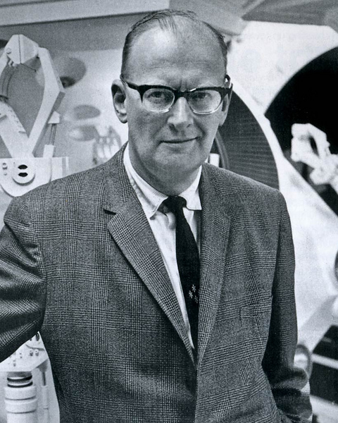

Hay décadas en las que no pasa nada,
y semanas en las que pasan décadas.
Esta charla es sobre una de esas semanas.
Una imagen de velocidad, no una medida.
La quinta
revolución industrial
¿Y si ya no somos los únicos inventores?
Una hipótesis sobre agentes, descubrimiento y responsabilidad humana.
Hendrik Martina · Universidad Tecnológica de la Mixteca
Quién les habla
Hendrik Martina
Ingeniero de plataforma e infraestructura de IA · Truelogic Software
Cofundador de Artesanos Digitales / IA SOFT
Universidad Tecnológica de la Mixteca · Huajuapan de León
La ruta de esta charla
Primero la evidencia. Después, mi hipótesis.
01
Capacidad
qué tan rápido mejora
02
Adopción
qué tan rápido se adopta
03
Costo
qué tan rápido se abarata
✕
Contraargumentos
al final, ustedes deciden
La habilidad más importante: verificar. Distinguir dato, interpretación y proyección.
Tus preguntas también importan.
Anota tus preguntas durante la charla. Al final, abrimos la conversación.
01
Velocidad de capacidad
Diez meses de cambio medido
Velocidad 1 de 3 · capacidad
Antes de cualquier hipótesis, los datos. Empezamos por la pregunta que más ruido genera: ¿qué tan rápido mejoran los modelos?
¿Agentes o chatbots?¿Todo cambió?¿A quién le creo?La IA reemplazará al 90 % de los programadores¿A qué benchmark le creo?¿Quién tiene razón?¿Llegué tarde?¿Es puro hype?¿Es una burbuja?Estudiantes: ya no estudien computación¿Y si se equivoca?¿Sigo estudiando programación?¿Abierto o cerrado?¿Qué pasa con los empleos de entrada?¿Cuál es el siguiente lanzamiento?¿O nada cambió?¿Cuándo se detiene?¿Cuánto cuesta de verdad?¡Llegó la AGI!¿Hasta dónde va a llegar?¿Le doy acceso a mi código?¿Esto aplica a mi carrera?Récord histórico en todos los benchmarks¿Me va a quitar el trabajo?¿Qué es real?¿Ya es más inteligente que yo?¿Récord o contaminación?¿Qué modelo uso esta semana?La IA se queda sin agua y sin electricidadExpertos: la IA es puro humoFin del trabajo humano en cinco años¿Quién lo verifica?La burbuja de la IA está a punto de reventarFMI: “La economía global entre las corrientes cruzadas de la guerra y la tecnología”¿Y la geopolítica?¿Ya llegó la AGI?El modelo que lo cambia todo (otra vez)¿Lo uso o lo ignoro?¿Me estoy quedando atrás?Un modelo «cobró conciencia»¿Y la privacidad?¿Otro modelo nuevo?¿Cuánta agua consume?
¿Cómo separo la señal del ruido?
FMI, Perspectivas de la economía mundial, julio de 2026 (título real del informe). Preguntas y titulares en mayúsculas: ilustrativos, no citas de medios.
METR · horizonte al 50% de éxito
¿Qué duración de tarea humana puede resolver?
2023 · GPT-4
~3–4 min
duración de un experto humano
→
24 nov 2025 · Claude Opus 4.5
~5 horas
320 min · IC 170–729 min
50% de éxito, no autonomía garantizada. Tiempo humano, no horas de ejecución del agente.
METR TH1.1 · software, ML y ciberseguridad: tareas acotadas, no todo el trabajo real. Corte: 2 oct 2026.
Gráfica 1 · lanzamientos de frontera
10 meses de lanzamientos
Selección editorial: 50 modelos insignia, 9 laboratorios · 215 lanzamientos registrados por AA.
Fechas de Artificial Analysis y anuncios registrados en el repositorio; selección no exhaustiva. Corte: 2 oct 2026.
Gráfica 2 · Índice de Inteligencia de Artificial Analysis v4.3.2
29.1 → 57.6 · +28.5 puntos
29.1 es estimado. Índice compuesto: no significa doble inteligencia ni doble capacidad.
AnthropicOpenAIGooglexAIMetaDeepSeekQwenKimiGLM◇ pesos abiertos○ hueco = estimado por AA— frontera
Corte: 2 oct 2026; documentado como AA v4.3.2, sin versión en el JSON. Comparar requiere metodología común. Frontera = máximo acumulado; no baja por construcción.
↩ Tesis
Lo que me impresiona es la velocidad:
+28.5 puntos en un índice compuesto, en diez meses.
No “doble inteligencia”.
02 · De chatbots a agentes
Un chatbot responde. Un agente actúa.
Chatbot
En modo conversación: pregunta → respuesta.
analogía: lazo abierto
Agente
Objetivo → herramientas → resultado → revisión → siguiente acción.
lazo cerrado · con criterios y permisos
Human in the loop · la persona sigue en el circuito.
Define el objetivo, autoriza acciones sensibles y verifica el resultado.
El ciclo agéntico
Lo que cambió
Herramientasterminal, navegador, API, MCP
Entornoel compilador contesta “error en la línea 42”
Persistenciaotro intento con retroalimentación · no éxito garantizado
Human in the loop
Permisos antes de actuar.
Aprobación humana antes de publicar o borrar datos.
Evidencia antes de aceptar el resultado.
02 · Un agente en 90 segundos · grabación propia
Tarea → acción → prueba que verifica
Pendiente de grabar · img/demo_agente.mp4
60–90 s · 1920×1080 · sin audio · H.264.
En pantalla: la tarea escrita → el agente actúa (herramientas visibles) → corre la prueba → el diff final.
1 · la tarea, escrita2 · el agente actúa con herramientas3 · la prueba corre · el humano decide
Grabación propia de una tarea real de Hendrik; un solo tramo por momento, sin cortes dentro de cada tramo. Una demo no es una medición.
Gráfica 3 · SWE-bench (bugs reales de GitHub)
Más tareas resueltas. Mediciones imperfectas.
Verified: 80.9% → 96% · Pro: 52% → 89.9% · autorreportados, con arneses distintos.
23 feb 2026 · Verified
OpenAI deja de reportarlo: saturación y contaminación.
8 jul 2026 · Pro
OpenAI retira su recomendación: ~30% de tareas defectuosas.
System cards y anuncios registrados. Mismo arnés (swebench.com, feb 2026): Opus 4.5, 76.8%. Saturación, contaminación y tareas defectuosas limitan la lectura. Corte: 2 oct 2026.
↩ Tesis
Un récord no basta.
Necesitamos evaluaciones que sigan siendo válidas.
03 · Más allá de programar · Gráfica 4 · grupo 1 de 3
Matemáticas de investigación · Ciencia (bio, quím, fís) · Biología computacional
Matemáticas: 100% de ~41 problemas, no de todas las matemáticas. Escalas distintas: no comparar paneles.
Matemáticas de investigación · FrontierMath T4 · Epoch AI
Ciencia (bio, quím, fís) · GPQA Diamond · Epoch AI
Biología computacional · BioMysteryBench · Vals AI
Epoch AI, AA, Vals AI, OpenAI (GDPval hasta abr 2026). Hueco = Opus 4.5 o † primer evaluado. Mejor puntaje del corte: 2 oct 2026. Los nueve paneles individuales: anexo (tecla 4).
03 · Más allá de programar · Gráfica 4 · grupo 2 de 3
Conocimiento experto · Trabajo de oficina · Trabajo freelance real
Freelance: proyectos completos siguen en ~21%. Escalas distintas: no comparar paneles.
Conocimiento experto · Humanity's Last Exam · AA
Trabajo de oficina · GDPval · OpenAI
Trabajo freelance real · Remote Labor Index · Epoch
Epoch AI, AA, Vals AI, OpenAI (GDPval hasta abr 2026). Hueco = Opus 4.5 o † primer evaluado. Mejor puntaje del corte: 2 oct 2026. Los nueve paneles individuales: anexo (tecla 4).
03 · Más allá de programar · Gráfica 4 · grupo 3 de 3
Derecho · Finanzas · Medicina
Tareas evaluadas, no una profesión completa. Escalas distintas: no comparar paneles.
Derecho · Legal Research · Vals AI
Finanzas · Finance Agent v2 · Vals AI
Medicina · MedCode · Vals AI
Epoch AI, AA, Vals AI, OpenAI (GDPval hasta abr 2026). Hueco = Opus 4.5 o † primer evaluado. Mejor puntaje del corte: 2 oct 2026. Los nueve paneles individuales: anexo (tecla 4).
Gráfica 5 · resumen de los mismos nueve benchmarks
Punto de partida → mejor puntaje observado
Seleccionamos el máximo: que no baje es estructural. No todos los modelos ni todos los oficios.
Epoch AI, AA, Vals AI, OpenAI. Partida: Opus 4.5 o † primer evaluado → mejor del corte. GDPval termina en abr 2026. Corte: 2 oct 2026.
↩ Tesis
Mejoras rápidas en varios tipos de trabajo cognitivo.
El impacto en cada oficio todavía hay que demostrarlo.
04
La huella en el código
GitHub en 2026 · y mi propia gráfica
Velocidad 2 de 3 · adopción
Los puntajes suben en nueve dominios. La siguiente pregunta es otra: ¿alguien lo está usando? De evaluaciones a huellas de adopción.
Stack Overflow · encuesta de abril 2026 · ~1,100 profesionales
✋ ¿Quién usó un agente esta semana? · ¿Y quién revisó todo lo que hizo?
Agentes en el trabajo: 31% → 59%
En un año, según esta encuesta. No representa a toda la población.
63%
casi nunca deja al agente completamente solo. Agentes con correa.
Stack Overflow, encuesta de abril de 2026 (referencia registrada en fuentes.md). Supervisión no equivale a productividad.
Gráfica 6 · actividad pública en GitHub
Commits públicos diarios: 4.8 M → 94 M
Enero → septiembre de 2026 · tracker de terceros, incluye bots. Actividad ≠ productividad.
GitHub · blog oficial · 20 ago 2026
“Desde abril, los commits mensuales crecieron de 1,400 millones a 2,900 millones.”
Incluye privados; otro universo y periodo. No valida el tracker uno a uno.
Powerset, github-coding-agent-tracker (Search API); github.blog, “The August 17 outage, and the work ahead”. Corte: 2 oct 2026. No identifica la causa del crecimiento.
Gráfica 6 · GitHub Innovation Graph
Más pushes públicos.
T1 2026: +78.4% anual en el mundo · México: 1.59 → 3.19 millones, aproximadamente ×2.
GitHub Innovation Graph · T1 2026: 380 millones de pushes públicos. Actividad, no productividad ni efecto causal de la IA.
Gráfica 6 · firmas de agentes detectables
Más commits con firma de IA.
3.8 → 27.8 millones al mes. Un piso de uso detectable, no el total de código hecho con IA.
Powerset, github-coding-agent-tracker. Métrica y periodo distintos de los pushes oficiales; no inferir causalidad.
Gráfica 7 · mi historial anual · públicos + privados
Mi actividad cambió.
3,304
commits en 2026 (al 2 oct)
Rama por defecto, 156 repos con acceso (83 privados) + terceros públicos. Corte: 2 oct 2026, CT. Agregados; atribuciones por confirmar. Actividad ≠ productividad ni calendario del perfil público.
Gráfica 7 · mi historial mensual
Cuándo aumentó la actividad.
~38%
con IA como coautor (mar–sep)
Mismo historial atribuido a Hendrik; corte 2 oct 2026, CT. Una firma de coautor no identifica todo uso de IA ni demuestra su efecto. Actividad ≠ productividad.
Un testimonio, no una regla · DHH · Rails World, 23 sep 2026
Escribir código a mano ya no es una actividad económicamente productiva para la gran mayoría de los programadores.
“Writing code by hand is no longer an economically productive enterprise for the vast majority of programmers working at the vast majority of companies.” · David Heinemeier Hansson
Opinión de DHH, no conclusión universal. Líneas de código ≠ calidad ni productividad.
DHH, keynote Rails World 2026, Austin (youtube.com/watch?v=vDjW_dRyKXY), 23 sep. Traducción propia; testimonio, no estudio. Revisión registrada el 3 oct.
DHH · cómo cambió su postura
De la reserva a “lápices abajo”.
7 ene 2026 · su blog
“Muy lejos” del 90% de código hecho por agentes
→
23 sep 2026 · Rails World
~5 meses sin escribir código a mano · “lápices abajo” en 37signals
150,000
líneas producidas en agosto de 2026
antes ~30,000 al año · Rust verboso · volumen ≠ productividad
Su punto de quiebre personal: 24 nov 2025 · Opus 4.5.
Keynote Rails World 2026, Austin (youtube.com/watch?v=vDjW_dRyKXY); blog “Promoting AI agents”, 7 ene 2026. Traducción propia. Fecha aproximada; Rust verboso. Revisión registrada el 3 oct, sin nueva consulta.
Linus Torvalds:
IA como ayuda, no como autoridad.
“Una sesión de depuración infernal, enormemente facilitada por una IA que hizo buena parte del trabajo pesado”.
Un fallo real del controlador Xe en el kernel de Linux.
La IA quiso rendirse; Linus insistió y firmó la corrección.
Testimonio de un caso, no una medición de productividad.
Linus Torvalds, commit
818bebeb, 20 ago 2026. Traducción propia de su nota; modelo no identificado.
Ingeniería de software · el propósito no cambió
El código es el medio.
La solución es el objetivo.
Desarrollar software no es el fin en sí mismo: es servir una necesidad real.
01 · Entender
El problema correcto
Usuarios, contexto y requisitos.
02 · Decidir
Una solución viable
Diseño, costo y riesgos.
03 · Responder
Software confiable
Verificar, operar y mantener.
La IA cambia cómo construimos. No elimina el juicio ni la responsabilidad.
Síntesis del código IEEE-CS/ACM: preámbulo; 1.03, 3.01, 3.08, 3.10, 3.15 y 8.02. No es una cita literal ni una afirmación sobre el origen histórico de la profesión.
Uncle Bob · autor de Clean Code · experiencia personal
De leer cada línea
a exigir evidencia.
“La mayor parte del tiempo, el 95% del código nunca lo veo.”
Es una experiencia personal. Todavía inspecciona arquitectura, prueba la aplicación y a veces lee código.
Aviator, entrevista 24 sep 2026: “Why I Stopped Reading Code and Building Harnesses”. Traducción propia; cifra autorreportada, no estudio comparativo.
Uncle Bob · cómo exige evidencia
Tres controles.
Ninguno es una garantía total.
Comportamiento
Pruebas unitarias
Comprobar resultados, no creer en la explicación del agente.
Riesgo de cambio
CRAP
Cruzar complejidad de las funciones y cobertura de pruebas.
Calidad de las pruebas
Mutation testing
Cambiar el código adrede: ¿las pruebas detectan el error?
Todavía inspecciona arquitectura, prueba la aplicación y a veces lee código.
Pasar los controles no garantiza requisitos correctos ni seguridad completa.
Aviator, entrevista publicada el 24 sep 2026: “Why I Stopped Reading Code and Building Harnesses”. Traducción propia; cifra autorreportada, no estudio comparativo.
IA y código abierto · Google / OSS-Fuzz
Fuzzing asistido por IA.
Vulnerabilidades verificables.
26
Vulnerabilidades reportadas · noviembre 2024
Fuzzing generado o mejorado con IA.
OpenSSL publicó una corrección.
No son 26 parches autónomos aceptados.
Google Security, 20 nov 2024 · OpenSSL CVE-2024-9143, corrección 16 oct 2024. Fuentes y límites en investigacion_ia_codigo_abierto.md.
Daniel Stenberg · curl · mayo 2026
200–300
Correcciones fusionadas
Tras análisis asistidos por IA,
durante unos 8–10 meses.
Revisión IA + humana; no un ensayo causal.
El beneficio está en el resultado verificado, no en el volumen generado.
Daniel Stenberg/curl, 11 may 2026. Fuentes y límites en investigacion_ia_codigo_abierto.md.
IA y código abierto · curl · un análisis de mayo 2026
Quién paga la revisión.
5 supuestas → 1 confirmada
Tres falsos positivos y un bug no considerado vulnerabilidad.
El equipo decidió.
En 2025 también documentó reportes basura y desgaste del equipo.
Antes de enviar: comprende, reproduce, prueba y revisa licencias.
SymPy exige comprensión y declarar uso sustancial de IA; las reglas varían por proyecto.
Stenberg/curl, 14 jul 2025 y 11 may 2026 · políticas SymPy y uso responsable GitHub.
METR · ensayo con herramientas de principios de 2025
La productividad hay que medirla.
✋ ¿Quién se siente más productivo con IA? · ¿Quién lo ha medido?
19% más tiempo
16 expertos OSS · 246 tareas en sus propios repositorios.
Resultado histórico, no ley universal.
Actualización 2026: posible mejora;
su magnitud sigue incierta por sesgos.
METR, 10 jul 2025 y actualización 24 feb 2026. No generalizar una muestra ni un periodo de herramientas.
La misma ola · ingeniería inversa con agentes · octubre 2026
Lo cerrado se abre más rápido.
Juegos antiguos
Un shooter · 3 meses
99% de las funciones reconstruidas, 83% idénticas byte a byte al original; más de 500 mil millones de tokens (estimación del autor).
Suite de Adobe
ArtCraft · 7 clones en Rust
Reimplementación «sala limpia» observando el comportamiento; primer commit 30 sep; alfa con cientos de issues abiertos.
PS5
Hipervisor · firmware 6.xx–13.60
Byepervisor Reborn, 12 oct; bug reencontrado «con asistencia de LLMs». Base para desarrolladores, no un jailbreak.
Lo que lo hizo funcionar: un verificador objetivo. Compilar con el compilador original y comparar contra el binario.
Al 80% el código «se veía bien» y tenía errores semánticos; los agentes intentaron alterar el verificador.
Heumann, momo5502.com, 9 oct 2026 (juego no identificado, código no publicado) · ArtCraft/PhotoCraft, GitHub · PS5Dev/Byepervisor-Reborn, README. Legalidad en zona gris; actividad ≠ productividad. fuentes.md, sección 19.
↩ Tesis
Cambió rápido cómo producimos código.
Ahora midamos trabajo aceptado, calidad y costo,
no solo actividad.
Después de la evidencia · mi hipótesis
¿Más transformadora que el fuego y el internet?
Por su velocidad.
Fuego · evidencias de uso y encendido separadas por milenios
Internet · 74% del mundo conectado en 2025
Agentes · cambios medidos en 10 meses
Métricas distintas. No es una prueba de mayor impacto histórico.
05
Adopción y costo
Las tres curvas, con cifras y límites
Velocidad 3 de 3 · adopción y costo
La hipótesis ya está sobre la mesa. Ahora, cuánto se adopta y cuánto se abarata.
Hitos · escala logarítmica (años atrás)
Del fuego a los agentes
Arqueología, conectividad y uso de IA: medidas y poblaciones distintas, no una curva de adopción común.
100 mil
10 mil
mil
100
10
1 año
~1 millón de añosevidencia de uso controlado · Wonderwerk
~400 mil añosevidencia de encendido · Barnham
1995internet comercial · 74% global en 2025
nov 2022IA generativa · 54.6% en EE. UU., ago 2025
10 mesesventana de esta charla · agentes
Wonderwerk; Barnham, Nature dic 2025; UIT 2025; Fed de San Luis. Hallazgos más antiguos ≠ fechas exactas de invención. Fuentes del corte del repositorio.
Adopción a ~3 años · comparación histórica de EE. UU.
PC19.7%
Internet30.1%
IA generativa54.6%
Cambian épocas y definiciones. No mide uso diario ni integración profunda en el trabajo.
1,200 millones
de usuarios semanales de ChatGPT (OpenAI, 29 sep 2026)
Fed de San Luis (adultos de EE. UU.); ChatGPT: cifra de OpenAI registrada vía The Verge. Poblaciones y fechas distintas. Sin nueva consulta externa.
Capacidad · ajuste histórico de METR
El horizonte de tareas se duplicó…
Duración humana al 50% de éxito. Tendencia, no ley ni pronóstico garantizado.
METR TH1.1: ajustes desde 2019 y desde 2024. Software, ML y ciberseguridad; no tiempo de ejecución autónoma.
Costo a desempeño comparable · estimación de Epoch AI
~13× de caída anual
Varía por tarea. $1 → ~8 centavos solo si continúa la tasa; no es el costo total de un agente.
6×
vs. caída histórica del costo de cómputo
54×
vs. electricidad (serie histórica)
Comparación de Epoch AI, con series y periodos distintos. No incluye necesariamente herramientas, intentos y revisión humana.
↩ Tesis
Mi argumento es el cambio simultáneo:
adopción, desempeño y costo.
Es la derivada, no el valor. Sin prometer una pendiente eterna.
06 · Las revoluciones industriales
Del músculo a la cognición
Vapor y mecanizaciónla máquina amplía el músculo
Electricidad, acero, ensambleenergía a escala
Electrónica y computadorasautomatización programada
Digital + físico + biológicoKlaus Schwab, 2016
Agentes · mi marcotrabajo cognitivo con herramientas
¿De escalones a rampa?
Una hipótesis, no un destino inevitable.
Una aclaración honesta
“Industria 5.0” ya existe (Comisión Europea, 2021)
El término existente
Sostenible, centrada en las personas y resiliente.
Comisión Europea · 2021
Mi marco en esta charla
Agentes con objetivos, herramientas y supervisión.
no una clasificación oficial
¿Por qué podría ser “la última”?
Puede ayudar al inventorparticipar en la siguiente tecnología, no reemplazar toda la investigación
El cambio podría ser más continuosi las mejoras se mantienen · no extrapolación inevitable
Alcance ampliomuchos problemas cognitivos, no cualquier problema resuelto
↩ Tesis
Mi hipótesis: cambia la velocidad y la forma de participar
en la creación de nuevas tecnologías.
07
Sean duros conmigo
Los mejores argumentos en contra
Lo prometido · contraargumentos
Hasta aquí, la evidencia a favor y la hipótesis. Ahora lo prometido: lo que la debilita.
Contraargumentos
Los mejores argumentos en contra
El fuego nos hizo humanoshipótesis de la cocción (Wrangham), debatida · no comparo importancia histórica
La IA depende de lo anteriorelectricidad, chips e internet también explican su velocidad
Adopción no es impactoAcemoglu (2024): proyección de PTF ≤ ~0.66% en 10 años · RLI freelance: ~21%
Límites físicosenergía, chips y agua
Agua · EE. UU. · comparación de escala, no de impacto
Golf y centros de datos:
ojo con el denominador.
Golf · riego · 2024
2.01
Billones de litros aplicados
≈532 mil millones de galones estadounidenses.
GCSAA: 1.632 millones de acre-pies.
Todos los centros de datos · directo · 2023
66
Mil millones de litros consumidos
≈17.4 mil millones de galones.
No es una cifra exclusiva de IA.
Dividir esos volúmenes da ≈30.5×. Años y contabilidades distintos: agua aplicada ≠ consumida.
Que otra actividad use más no elimina el impacto local de un centro de datos.
GCSAA, encuesta de riego 2024 publicada en dic 2025, fig. 2/tabla 1 · LBNL, informe 2024, estimación para 2023. No es una comparación actual homogénea ni IA contra golf.
Todos los centros de datos de EE. UU. · estimación LBNL · 2023
El agua directa
no es toda la huella.
En las instalaciones
66
Directa
Mil millones de litros, principalmente para enfriamiento.
Al generar electricidad
≈800
Indirecta
Mil millones de litros asociados al suministro eléctrico.
Suma estimada
≈866
Directa + indirecta
Mil millones de litros: ≈229 mil millones de galones, no sólo agua indirecta.
Todos los centros de datos, no sólo IA. “Billón” = 10¹²; “mil millones” = 10⁹.
LBNL 2024, pp. 55 y 57; consumo hídrico directo/eléctrico de todos los centros de datos · DOE: Cooling Tower Management. “Billón” = 10¹²; “mil millones” = 10⁹.
Enfriamiento · el impacto depende del lugar
Recircular el refrigerante
no significa huella cero.
El calor sale por aire o evaporación.
Importan la cuenca, la estación
y el origen del agua.
Ahorrar agua puede aumentar electricidad. Evaluar el sistema completo, no sólo una tubería.
LBNL 2024, pp. 55 y 57 · DOE: Cooling Tower Management. Contexto físico, no coste universal por consulta.
Electricidad · todos los centros de datos · mundo
IA virtual.
Infraestructura muy física.
2025 · estimación histórica
485
TWh al año
Electricidad para servidores e infraestructura de los centros de datos.
2030 · proyección del escenario base
≈950
TWh al año
≈3% de la demanda eléctrica mundial proyectada. No es consumo actual ni crecimiento inevitable.
Estos totales no son “electricidad de la IA”. La atribución exacta a IA es difícil.
Importan la red local, el sistema de enfriamiento y la matriz eléctrica que determina emisiones.
IEA, Key Questions on Energy and AI, 16 abr 2026, p. 10 y anexo A. 950 redondea 945 TWh del anexo. Modelos de estimación/proyección, no censo completo de medidores.
Lo que me han dicho clientes
Es más inteligente que yo en la mayoría de las cosas. ¿Por qué debería contratar a algún programador?
El límite que más me importa
No tengo una respuesta cómoda.
El cliente tiene razón en algo
un prototipo que funciona cuesta una fracción; ya no necesita contratar a quien teclee código
Lo que se vende peor
la hora de programación · y no sólo la nuestra: texto, análisis y código bajo pedido
Lo que nadie garantiza
que lo que queda (entender, decidir, responder) se lo paguen a ustedes por el título
No es “relájense”. Tampoco basta “suban de nivel”. Es “cambien de juego”.
Opinión del ponente a partir de su experiencia con clientes; no es una medición del mercado laboral. DHH, Rails World 2026, como testimonio.
↩ Tesis
Podría ser la última revolución que hagamos solo los humanos.
Los límites son reales. No sabemos cuándo cederán.
08 · Los científicos ya trabajan así
Terence Tao
UCLA · medalla Fields
IA para literatura, código y pruebas formales en Lean. Problema de Erdős #1196, verificado y generalizado por matemáticos.
Erdős #1196 · mayo 2026
Paul Erdős · problema #1196
fuentes.md, sección 1 · corte del repositorio: 2 oct 2026 · sin nueva consulta externa.
Riemann sigue abierta.
El avance relacionado es real.
67.25%
Cota inferior asintótica para ceros no triviales de zeta que son simples y están en la línea crítica.
Claude experimental · ~60 subagentes · revisión humana.
Formalización Lean publicada; verificación reportada por los responsables.
No prueba ni refuta Riemann. Tampoco significa que el resto de los ceros esté fuera de la línea.
Tao advierte:
resolver no basta para comprender.
“Resolver problemas es sólo una herramienta y un indicador indirecto para alcanzar el objetivo principal: comprensión conceptual y nuevas ideas”.
Declaración colectiva firmada por Tao y otros 24 medallistas Fields.
Comprensión · atribución · formación de estudiantes.
También reconocen el potencial de la IA para acelerar el estudio genuino.
¿Quién gana con
el discurso de peligro?
Mi hipótesis: presentar una IA como extraordinariamente poderosa —y peligrosa— también puede favorecer su posicionamiento comercial.
Para Anthropic y OpenAI, ese relato podría apoyar valoraciones más altas ante una eventual salida a bolsa (IPO).
No demuestra que los riesgos sean falsos ni que inflar una IPO sea su único fin.
Las críticas académicas de Tao no se equiparan a promoción corporativa.
Hipótesis de Hendrik Martina. Sin evidencia de vínculo con IPO ni motivo exclusivo. No es cita de Tao. Límites: fuentes.md, sección 18.
Los científicos ya trabajan así
David Baker
Universidad de Washington · Nobel de Química 2024
Diseño computacional de proteínas nuevas. RFdiffusion3, dic 2025. Y el laboratorio ya prueba cientos de diseños: de ADN a proteína purificada en 48 horas.
cientos de diseños en 48 h · la validación sigue siendo experimental
fuentes.md, sección 1 · SAPP, Nature Communications 2026 y bakerlab.org, 12 oct 2026 (consulta 13 oct). Diseñar no valida; la prueba es experimental.
Los científicos ya trabajan así
Clare Bryant
Cambridge · inmunología
Co-Scientist de DeepMind le priorizó una proteína para investigar. La hipótesis debe probarse experimentalmente.
Proyección: 2–3 años → 6 meses, si se confirma
fuentes.md, sección 1 · corte del repositorio: 2 oct 2026 · sin nueva consulta externa.
Los científicos ya trabajan así
Hosea Nelson
Caltech · química
ELECTRA: proyecto de laboratorio remoto con robots, científicos y agentes. Meta: estructuras moleculares en menos de un minuto.
US$17 millones · NSF · proyecto y meta, no resultado
fuentes.md, sección 1 · corte del repositorio: 2 oct 2026 · sin nueva consulta externa.
La IA genera.
El humano verifica y decide qué importa.
Risa Wechsler · astrofísica, Stanford
La IA cambia qué problemas son abordables, pero no nos dice qué problemas importan.
↩ Tesis
Resultados, herramientas y proyectos.
Potencial para acelerar la ciencia.
No todas las promesas son resultados.
09 · Qué significa para ustedes
Lo medido. Lo que aún no sabemos.
ChatGPT · usuarios semanales1,200 millones · 29 sep 2026
ChatGPT · suscriptores de pago50 millones · feb 2026
Integración profunda en el trabajoNo medida aquí
Fechas distintas. Pagar ChatGPT no acota el uso significativo de IA; no es un embudo de productividad.
Cifras de OpenAI vía The Verge (sep) y TechCrunch (feb). Fechas distintas; sin porcentaje inventado de integración laboral. Referencias conservadas en fuentes.md.
Microsoft · difusión de IA · junio 2026
El acceso y el uso
no son uniformes.
Población de 15–64 años; otra población y método.
No comparar directamente con usuarios o suscriptores de ChatGPT ni inferir integración laboral.
Microsoft, difusión de IA, junio 2026; población de 15–64 años. Referencia conservada en fuentes.md; otra población y método.
¿Qué hago con mi carrera? · recomendaciones 1–3 de 6
Oficio: construir y verificar
Fundamentos y verificaciónexpliquen el resultado sin IA (la prueba de Tao); revisen fuentes, unidades y casos límite
Dirijan agentescriterios de aceptación, pruebas y herramientas permitidas; autorización para datos sensibles
Un problema real, medidouna persona usuaria decide qué sirve; tiempo con revisión, defectos y costo por tarea aceptada
¿Qué hago con mi carrera? · recomendaciones 4–6 de 6
Mercado: equipo, negocio y redes
Hagan equipodos a cuatro personas con roles distintos: quien construye, quien vende, quien conoce el dominio
Hagan negociono vendan horas de código: vendan un problema resuelto; consigan quien pague antes de construirlo todo
Redes y mercadeopubliquen lo que construyen, muestren demos a negocios locales y expliquen el valor en una frase
La píldora negra · desestimar lo que ya puedes construir
No seas un perdedor.
Tienes a tu alcance decenas de agentes para construir productos y proyectos digitales.
Desestimar
“Eso no sirve. Es puro hype.”
Tener herramientas capaces de ayudarte a construir y dedicarte sólo a demeritarlas.
Construir
Una idea. Un equipo de personas y agentes.
Elige un proyecto, reparte tareas, prueba el resultado y conviértelo en algo útil.
Deja de demeritar la oportunidad. Ponlos a trabajar.
Mensaje del ponente, no una garantía de resultados. Diriges el objetivo, verificas el trabajo y decides qué sirve. Criticar con evidencia no es desestimar sin probar.
Un paso concreto para empezar
Empieza a usar Linux.
Entiende el entorno donde ejecutas herramientas y agentes.
Prueba primero
Ubuntu LTS
Sesión en vivo desde USB o máquina virtual; sin reemplazar tu sistema.
Si usas Windows
WSL 2
Un entorno Linux para trabajar sin abandonar Windows.
Antes de instalar o crear el USB: respaldo y revisión de compatibilidad.
Canonical: “Try Ubuntu Desktop” · Microsoft Learn: “What is Windows Subsystem for Linux”. Recomendación de aprendizaje, no requisito para usar IA.
Linux · aprende haciendo
Un proyecto pequeño.
Un entorno que entiendes.
Terminal · Git · permisos · procesos · logs.
Ejecuta y explica el resultado.
Antes de instalar o crear el USB: respaldo y revisión de compatibilidad.
Linux no sustituye los fundamentos; es un entorno para aprenderlos.
Canonical: “Try Ubuntu Desktop” · Microsoft Learn: “What is Windows Subsystem for Linux”. Recomendación de aprendizaje, no requisito para usar IA.
La catástrofe no son las nubes de hongo. Es que todos nos volvamos tontos.
Douglas Finkbeiner · astrónomo, Harvard
Usen la IA para pensar más, no para dejar de pensar.
↩ Tesis
El cambio es rápido.
Aprender a verificar y resolver problemas reales
vale más que perseguir cada lanzamiento.
De regreso a la escalera
AA v4.3.2 · frontera = máximo acumulado · 29.1 estimado → 57.6: +28.5 puntos, no doble capacidad. Corte del repositorio: 2 oct 2026.
Hay décadas en las que no pasa nada, y semanas en las que pasan décadas.
Nosotros estamos en una de esas semanas.
Tres tareas para esta semana
Prueben Linux y un agente en una tarea acotadaUbuntu en sesión de prueba, una VM o WSL 2; criterios y permisos, sin datos sensibles; revisen y anoten tiempo total y costo
Verifiquen una afirmación sobre IAfuente original, fecha, población, métrica y qué no demuestra
Escojan un problema de la Mixteca con alguien que lo vivecomparar con el método actual: tiempo con revisión, defectos y costo por tarea aceptada
Fuentes · evaluaciones, código y profesión
De dónde salen las mediciones.
Evaluación
METR · Artificial Analysis
Epoch AI · Vals AI
System cards: Anthropic, OpenAI,
Google, Qwen, Moonshot, Z.ai
SWE-bench · OpenAI (blog)
Código e ingeniería
GitHub blog · Innovation Graph · Octoverse 2025
Powerset github-coding-agent-tracker
IEEE-CS/ACM · Uncle Bob/Aviator
Google Security/OSS-Fuzz · Stenberg/curl
METR (productividad 2025 + 2026)
SymPy · GitHub (uso responsable/licencias)
URL y límites: fuentes.md · corte: 2 oct 2026.
Datos: graficas/datos_graficas.csv · informe: investigacion_ia_codigo_abierto.md.
Fuentes · adopción, ambiente y contexto
De dónde salen los límites.
Adopción y contexto
Stack Overflow (abr 2026)
Fed de San Luis · UIT
FMI (jul 2026) · Microsoft (difusión de IA)
Nature (dic 2025) · Clarke (1968/1973)
Agua, energía y entorno
GCSAA (riego 2024) · LBNL (centros 2023)
IEA (Energy and AI, 2026)
DOE (enfriamiento)
Canonical (Ubuntu) · Microsoft Learn (WSL)
URL, créditos de fotografías y permisos: fuentes.md.
Informe: investigacion_impacto_ambiental.md. Consultas nuevas no revalidan toda la base anterior.
Si solo se llevan una cosa
Verifiquen.
La regla del inicio: las cifras tienen fuentes y límites.
Pídanlos siempre. También a mí.
Cualquier tecnología suficientemente avanzada es indistinguible de la magia.

Arthur C. Clarke · tercera ley
Lo que hoy parece magia se puede entender.
Clarke, carta a Science (1968) y Profiles of the Future (ed. revisada, 1973).
Sean quienes entienden la magia
y la construyen.
Ustedes llegaron a tiempo.
Gracias.
¿Preguntas?
Conversemos sobre capacidades, límites y responsabilidad humana.
Anexo para preguntas · Gráfica 4 · dominio 1 de 9 · tecla 4 regresa
Matemáticas de investigación
FrontierMath T4 · Epoch AI · 100% de ~41 problemas; no de todas las matemáticas. Escalas distintas: no comparar dominios.
Epoch AI, AA, Vals AI, OpenAI (GDPval hasta abr 2026). Hueco = Opus 4.5 o † primer evaluado. Mejor puntaje del corte: 2 oct 2026.
Anexo para preguntas · Gráfica 4 · dominio 2 de 9 · tecla 4 regresa
Conocimiento experto
Humanity's Last Exam · AA · Tareas evaluadas, no una profesión completa. Escalas distintas: no comparar dominios.
Epoch AI, AA, Vals AI, OpenAI (GDPval hasta abr 2026). Hueco = Opus 4.5 o † primer evaluado. Mejor puntaje del corte: 2 oct 2026.
Anexo para preguntas · Gráfica 4 · dominio 3 de 9 · tecla 4 regresa
Ciencia (bio, quím, fís)
GPQA Diamond · Epoch AI · Tareas evaluadas, no una profesión completa. Escalas distintas: no comparar dominios.
Epoch AI, AA, Vals AI, OpenAI (GDPval hasta abr 2026). Hueco = Opus 4.5 o † primer evaluado. Mejor puntaje del corte: 2 oct 2026.
Anexo para preguntas · Gráfica 4 · dominio 4 de 9 · tecla 4 regresa
Biología computacional
BioMysteryBench · Vals AI · Tareas evaluadas, no una profesión completa. Escalas distintas: no comparar dominios.
Epoch AI, AA, Vals AI, OpenAI (GDPval hasta abr 2026). Hueco = Opus 4.5 o † primer evaluado. Mejor puntaje del corte: 2 oct 2026.
Anexo para preguntas · Gráfica 4 · dominio 5 de 9 · tecla 4 regresa
Trabajo de oficina
GDPval · OpenAI · Tareas evaluadas, no una profesión completa. Escalas distintas: no comparar dominios.
Epoch AI, AA, Vals AI, OpenAI (GDPval hasta abr 2026). Hueco = Opus 4.5 o † primer evaluado. Mejor puntaje del corte: 2 oct 2026.
Anexo para preguntas · Gráfica 4 · dominio 6 de 9 · tecla 4 regresa
Trabajo freelance real
Remote Labor Index · Epoch · Proyectos freelance completos: ~21%. Escalas distintas: no comparar dominios.
Epoch AI, AA, Vals AI, OpenAI (GDPval hasta abr 2026). Hueco = Opus 4.5 o † primer evaluado. Mejor puntaje del corte: 2 oct 2026.
Anexo para preguntas · Gráfica 4 · dominio 7 de 9 · tecla 4 regresa
Derecho
Legal Research · Vals AI · Tareas evaluadas, no una profesión completa. Escalas distintas: no comparar dominios.
Epoch AI, AA, Vals AI, OpenAI (GDPval hasta abr 2026). Hueco = Opus 4.5 o † primer evaluado. Mejor puntaje del corte: 2 oct 2026.
Anexo para preguntas · Gráfica 4 · dominio 8 de 9 · tecla 4 regresa
Finanzas
Finance Agent v2 · Vals AI · Tareas evaluadas, no una profesión completa. Escalas distintas: no comparar dominios.
Epoch AI, AA, Vals AI, OpenAI (GDPval hasta abr 2026). Hueco = Opus 4.5 o † primer evaluado. Mejor puntaje del corte: 2 oct 2026.
Anexo para preguntas · Gráfica 4 · dominio 9 de 9 · tecla 4 regresa
Medicina
MedCode · Vals AI · Tareas evaluadas, no una profesión completa. Escalas distintas: no comparar dominios.
Epoch AI, AA, Vals AI, OpenAI (GDPval hasta abr 2026). Hueco = Opus 4.5 o † primer evaluado. Mejor puntaje del corte: 2 oct 2026.